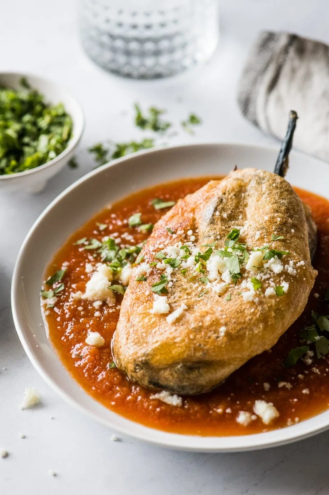

Chile Relleno

Chile Relleno's are personally a staple dish for my family. Originating from the city of Puebla, Mexcio, this savory dish is made with roasted poblano pepper, stuffed with mozzarella cheese, wrapped in fluffy battered egg and fried. Once served, the chile relleno sits in a delicious tomato and oregano sauce for an extra layer of taste. It could be served alone, or with a side of rice and beans.
Ingredients
- 6 large poblano peppers
- 1 mozzarella ball
- 6 large eggs
- 1/2 cup all-purpose flour
- 6 roma tomatoes
- 1/2 small yellow onion
- 3 garlic cloves
- 1 teaspoon of oregano
- salt to taste
- 3 cups of oil
Instructions
- Lightly coat peppers in oil and roast on a skillet or griddle over medium-high heat until the skin is charred and blistered.You may also roast peppers using the oven broiler (no oil needed).
- Once peppers have been charred on all sides, remove from heat and place in a food safe bag or dish where you can cover to allow it to steam for about 15 minutes.
- By now, the peppers should have soften. Start peeling off the loose skin as much as possible, no need to be perfect.
- Cut a small lit down the top half of the poblano pepper. At this point, you may want to remove some of the seeds to avoid any rare but spicy peppers.
- Cut the mozzarella cheese into small cubes or long sticks. Use cheese to carefully stuff the poblano peppers. Poblano peppers are extra fragile in this state and may start to tear.
- Use multiple toothpicks to gently close the opening on the poblano pepper.
- Start heating the oil in a large saucepan or deep skillet over medium-high heat.
- Start making the batter by seperating the egg whites from the yolks into two seperate bowls. The egg whites should go into a mixing bowl so that you can beat the egg whites until stiff peaks form.
- While continuing to beat the egg whites, add the yolk one at a time until everything is fully mixed in and add a pinch of salt.
- Once the oil is hot, coat the peppers in flour and then dip the poblano pepper in the egg batter until fully covered.
- Fry the peppers for 3-5 minutes on each side, or until the batter is golden brown and crispy. Cook a few peppers at a time and do not overcrowd the skillet.
- Transfer the peppers onto a paper-lined baking sheet to drain off any excess oil.
- Start the red sauce by putting all tomatoes, onion, garlic, oregano, salt and black pepper to taste into a blender. Puree until smooth.
- Heat oil in a large saucepan over medium-high heat and add blended red sauce to bring to a boil.
- Reduce heat and add ready poblano peppers. Simmer for 5 minutes and serve immediately.